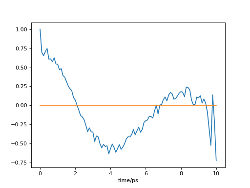

Utilities¶
Module: utilities¶
- pytim.utilities.lap(show=False)[source]¶
Timer function
- Parameters:
show (bool) – (optional) print timer information to stderr
- pytim.utilities.correlate(a1, a2=None, _normalize=True)[source]¶
correlate data series using numpy fft. The function calculates correlation or cross-correlation.
- Parameters:
a1 (ndarray) – first data set to correlate
a2 (ndarray) – (optional) second data set, to compute the cross-correlation
- Example: time autocorrelation of the number of atoms in the outermost
layer
>>> import MDAnalysis as mda >>> import pytim >>> import numpy as np >>> from pytim.datafiles import * >>> >>> u = mda.Universe(WATER_GRO,WATER_XTC) >>> inter = pytim.ITIM(u) >>> >>> size=[] >>> time=[] >>> # sample the size of the first layer on the upper >>> # side >>> for ts in u.trajectory[:50]: ... time.append(ts.time) ... size.append(len(inter.layers[0,0])) >>> >>> # we need to subtract the average value >>> np.set_printoptions(precision=3,threshold=1000) >>> corr = pytim.utilities.correlate(size-np.mean(size)) >>> corr = corr/corr[0] # normalize to 1 >>> print (corr) [ 1. 0.142 0.104 0.147 0.371 0.099 0.165 0.095 0.338 0.219 -0.021 0.087 0.245 -0.01 -0.193 0.103 0.029 -0.009 -0.11 0.012 -0.133 0.056 -0.283 -0.276 0.035 -0.012 -0.211 -0.429 -0.132 -0.263 0.072 -0.7 -0.236 0.136 -0.243 -0.878 -0.13 -0.329 -0.386 -0.652 -0.267 -0.188 -0.226 -0.79 -0.284 -0.02 -1.512 -1.316 -0.188 7.551]
>>> np.set_printoptions()
This will produce (sampling the whole trajectory), the following:
(
Source code,png,hires.png,pdf)
{kind=link}
{kind=link}
- pytim.utilities.generate_cube_vertices(box, delta=0.0, jitter=False, dim=3)[source]¶
Generate points at the vertices of a rectangular box
- Parameters:
box (array_like) – dimensions of the box
delta (array_like) – add buffer around the box
jitter (bool) – create general linear positions by minute displacements of the vertices
dim (int) – dimension of the rectangular box, the default is 3